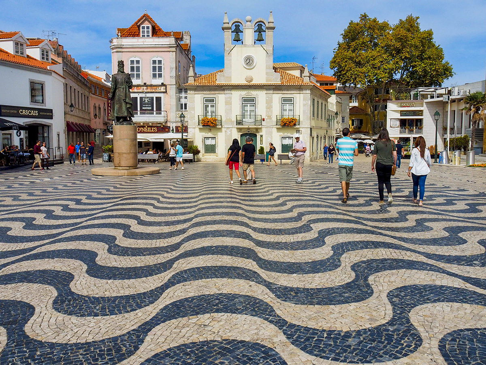

| Demografia | População | 214.158 hab |
|---|---|---|
| Densidade populacional | 1.500 hab/km² | |
| Geografia | Área | 97 km² |
| Região | Lisboa | |
| País | Portugal | |
| Website | www.cascais.pt | |
Curiosidades sobre Cascais
- Cascais foi um importante refúgio de pescadores antes de se tornar cidade turística.
- É conhecida pelas suas praias e pelo Estoril, famoso pelo Casino e circuito de Fórmula 1.
- A cidade tem um clima mediterrânico ameno durante quase todo o ano.
- O centro histórico de Cascais preserva ruas estreitas e coloridas, com charme tradicional.
- Cascais é ponto de partida de trilhos para explorar a costa atlântica e a serra de Sintra.
